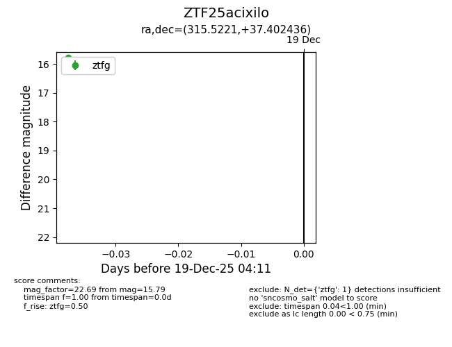
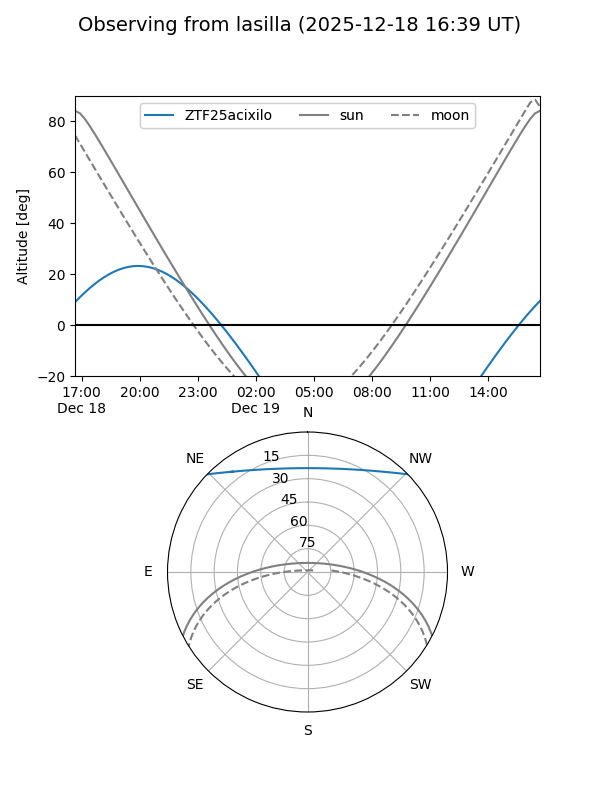
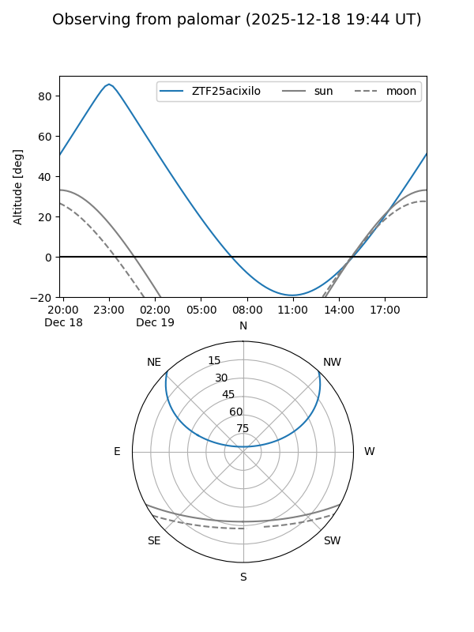

ZTF25acixilo
Target ZTF25acixilo at 2025-12-19 04:12
Aliases and brokers:
FINK: fink-portal.org/ZTF25acixilo
Lasair: lasair-ztf.lsst.ac.uk/objects/ZTF25acixilo
ALeRCE: alerce.online/object/ZTF25acixilo
alt names
ZTF25acixilo (ztf,fink_ztf)
Coordinates:
equatorial (ra, dec) = 315.5221,+37.40244
equatorial (HMS+DMS) = 21:02:05.30,+37:24:08.77
galactic (l, b) = (80.6751,-6.00360)
Flags:
Photometry:
last ztfg=15.79
1 ztfg detections
Lightcurve

Visibility


Additional plots